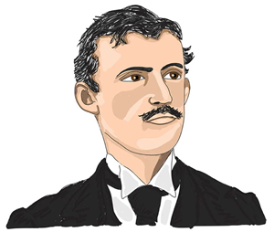
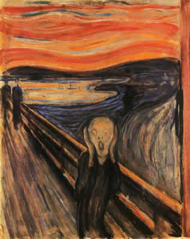
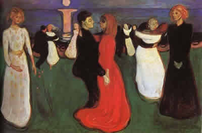

About Edvard Munch

Edvard Munch was a prolific yet perpetually troubled artist preoccupied with matters of human mortality such as chronic illness, sexual liberation, and religious aspiration. He expressed these obsessions through works of intense color, semi-abstraction, and mysterious subject matter. Following the great triumph of French Impressionism, Munch took up the more graphic, symbolist sensibility of the influential Paul Gauguin, and in turn became one of the most controversial and eventually renowned artists among a new generation of continental Expressionist and Symbolist painters. Munch came of age in the first decade of the 20th century, during the peak of the Art Nouveau movement and its characteristic focus on all things organic, evolutionary, and mysteriously instinctual.Munch came to treat the visible as though it were a window into a not fully formed, if not fundamentally disturbing, human psychology.
Source: Edvard Munch Paitings, Biography, and Quotes. Taken from Edvard Munch Paintings, Biography, and Quotes
Famous Pieces by Edvard Munch
The Scream | 1893

The significance of Munch's The Scream within the annals of modern art cannot be overstated. It stands among an exclusive group, including Van Gogh's Starry Night (1889), Picasso's Les Demoiselles d'Avignon (1907), and Matisse's Red Studio (1911), comprising the quintessential works of modernist experiment and lasting innovation. The fluidity of Munch's lateral and vertical brushwork echoes the sky and clouds in Starry Night, yet one may also find the aesthetic elements of Fauvism, Expressionism, and perhaps even Surrealism arising from this same surface.
The setting of The Scream was suggested to the artist by a walk along a road overlooking the city of Oslo, apparently upon Munch's arrival at, or departure from, a mental hospital where his sister, Laura Catherine, had been interned. It is unknown whether the artist observed an actual person in anguish, but this seems unlikely; as Munch later recalled, "I was walking down the road with two friends when the sun set; suddenly, the sky turned as red as blood. I stopped and leaned against the fence ... shivering with fear. Then I heard the enormous, infinite scream of nature."
This is one of two painted versions of The Scream that Munch rendered around the turn of the 20th century; the other (c. 1910) is currently in the collections of the Munch Museum, Oslo. In addition to these painted versions, there is a version in pastel and a lithograph.
Source: Edvard Munch Paitings, Biography, and Quotes. Taken from Edvard Munch Paintings, Biography, and Quotes
Love & Pain (aka The Vampire) | 1893

The truth is, Munch did not title this painting "Vampire." He called it "Love and Pain" and it was only later that it picked up the name and interpretation of a man locked in a vampire's embrace. Munch maintained it was nothing more than a woman kissing a man on the neck. The Nazis declared it morally 'degenerate.'
In the painting, we see a man in anguish, arms around his love, while she tries to comfort him. Perhaps she is laying her face on his shoulder even. Some thought it was about his visits to prostitutes, yet others saw it as some sort of macabre fantasy about the death of his favorite sister. Evidently Munch remained ambiguous about the deeper meaning behind it.
In 1908, following his stay in Berlin and subsequent return to Paris, Munch suffered a nervous breakdown. A bohemian life of excessive drinking and brawling and the pain and anxiety caused by the loss of his sister and father had taken their toll. Munch was admitted to a hospital in Copenhagen, where for eight months he was subject to a strict dietary and "electrification" regimen. While hospitalized, Munch created the lithographic series, Alpha and Omega (1908), depicting the artist's relationships with various friends and enemies.
Source: Edvard Munch Paitings, Biography, and Quotes. Taken from The Art Story Website: Edvard Munch
The Dance of Life | 1899

A distinction can be drawn between those of Munch's imaginative works that are directly symbolic, like Jealousy, and those like the present picture that are illustrations of a metaphor. The latter may be more difficult to interpret. Life is not in fact a dance and metaphor is too vague to give much indication of what is intended. The picture, however, appears to be a more complex and personalized version of Woman in Three Stages, with an innocent woman in white on the left, a sensual woman dancing with the man, and an anguished woman in black on the right. All three resemble Tulla Larsen; the girls dancing in the background may also represent her. The man in the foreground appears to be Munch.
It is possible to construct a reasonable explanation of the scene if we remember that at times Munch used the depth of the picture space as a time scale, moving from the distant past in the far background up to the present in the foreground adjacent to the picture plane. Applying this principle here, the initial impulse for life's dance comes from the sun with its phallic column of light crossing the sea. In front of this, far away on the beach stands a solitary girl, waiting for a sex partner. At about the same distance but now on the greensward a group of men appear to contend for the girl's favor - a point where jealousy arise.
Nearer to us a chosen male partner dances decorously with the girl; this is the stage of courtship. Still closer to the foreground courtship has progressed to lust, in the form of a leering man ready to ravish his partner. His face is a gross caricature of the playwright Gunnar Heiberg, who had introduced Munch to Tulla Larsen and of whom he was jealous, believing Tulla had previously had an affair with him. The girl still wears white but her hair has darkened and reddened. The couple in the foreground represent the final stage, where the dance of life turns into a dance of death. They glide through the motion like somnambulists, trapped by their fate. Munch's feet are enveloped by the coils of Tulla's red gown, while its predatory contour almost completely encases him. Yet there is no eye contact, they remain spiritually remote from each other. Placed in profile, unlike nearly all the other figures, they form the timeless image of a pair for whom creative life, his artistic, hers biological, has ended. Tulla on the left looks forward naively to connubial bliss, for her gaze misses the distressing vision, but she on the right looks straight at it, apprehending the fatal consequences of love.
Source: Edvard Munch Paitings, Biography, and Quotes. Taken from The Art Story Website: Edvard Munch